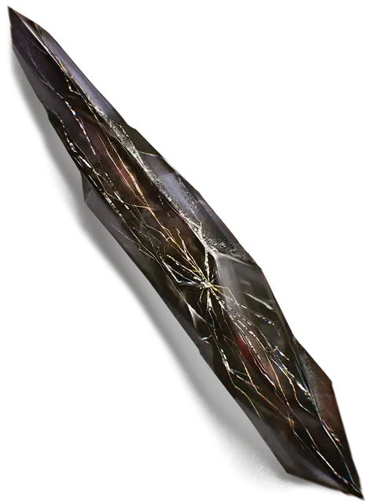

Осколок Кселуана
Shard of Xeluan
Чудесный предмет, редкий (требуется настройка)

Рекомендованная стоимость 501-5 000 зм
Обсидиановый осколок длиной 1 фут с прожилками серебра и золота под его холодной поверхностью.
Усиленная магия. Пока вы держите осколок, вы можете использовать его как фокусировку для заклинаний, и он даёт вам бонус +1 к броскам атаки заклинаниями.
Увеличение силы. Пока вы носите осколок с собой, ваш показатель Силы увеличивается на 4. Осколок не может поднять ваш показатель Силы выше 22.
Проклятие. После настройки на этот предмет его проклятие распространяется на вас. Вы остаетесь проклятым до тех пор, пока на вас не будет наложено заклинания снятие проклятия [remove curse] или подобная магия, либо пока осколок не будет вновь присоединен к окаменевшему сердцу Кселуана.
Проклятие осколка приносит вам несчастья. При выпадении 1 на броске атаки, проверке характеристик или спасброске сделайте бросок по таблице "Несчастья осколка", чтобы определить несчастье. Пока длиться эффект несчастья, другие несчастья от осколка не могут настигнуть вас.
| к6 | Несчастья осколка |
| 1 | Вы случайно поранились осколком и становитесь отравленными до следующего рассвета. |
| 2 | Вы переживаете видение древнего бедствия - прекрасный город, над которым нависла угроза от разрушающихся гор и извергающихся вулканов, и вы становитесь ошеломленным до конца своего следующего хода. |
| 3 | Земля под вами сотрясается в течение нескольких секунд. Вы и все существа в пределах 10 футов от вас должны преуспеть в спасброске Ловкости Сл 16, иначе быть сбитыми с ног. |
| 4 | Осколок выбрасывает три светящихся волшебные стрелы, которые нацеливаются на одно случайное существо в пределах 30 футов от вас. Если такой цели нет, ею становитесь вы. Каждая стрела автоматически попадает в цель и наносит 3 (1к4 + 1) урона силовым полем. |
| 5 | До наступления следующего рассвета все звери с показателем интеллекта 3 или ниже враждебны к вам. |
| 6 | Ничего не происходит так, как вам хотелось бы. До следующего рассвета вы совершаете с помехой проверки характеристик. |